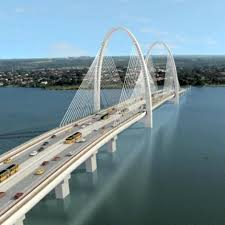

O "Litoral" de Brasília
O Pontão é o maior centro de lazer da capital, oferecendo gastronomia e o pôr do sol mais famoso da cidade à beira do Lago Paranoá.
Voltar ao Início
O Pontão é o maior centro de lazer da capital, oferecendo gastronomia e o pôr do sol mais famoso da cidade à beira do Lago Paranoá.
Voltar ao Início